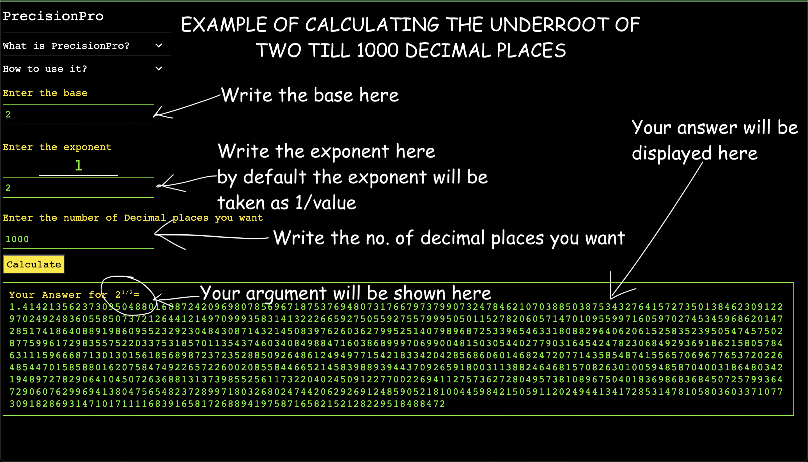

•PrecisionPro can calculate nth-root ie. underroot, cubeoot and so
on till any decimal precision(subject to your device)
•Start by calculating under root of 2 till 1000 decimal places enter
base as 2 and exponent as 1/2 where 1/_ is already given just enter
2 and in the number of decimal places write 1000
•It can compute upto any number of decimal places be it 10 or 10
thousand
How to use it?
Step 1) Fill in all the base, exponent and the decimal places
Step 2) Make sure the operation is mathematically possible
Step 3) Press calculate button
I am attaching a illustration of how to calculate √2 till 1000
decimal places it will clear all your doubts
